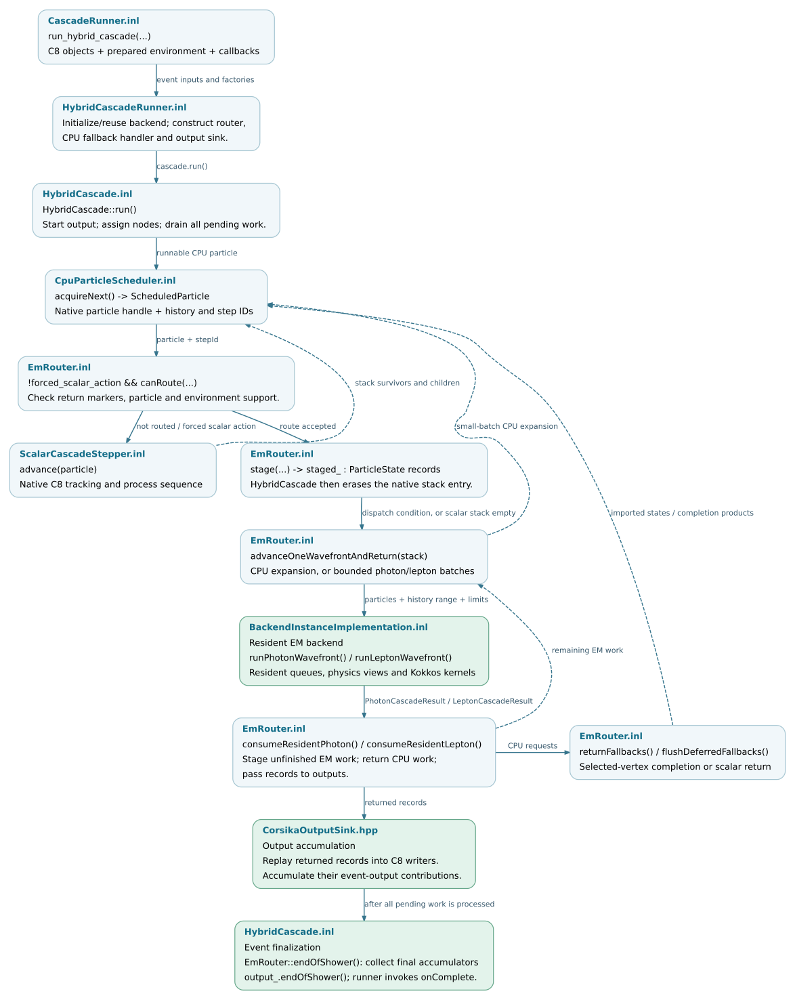

Execution and scheduling
The scheduling layer advances a configured event by combining native C8
particle steps with Kokkos batch execution. HybridCascade controls the
local event loop, EmRouter transfers supported particles to the EM backend,
and the backend advances them using the selected Kokkos execution space.
An optional process coordinator distributes subshower work among CPU-prefix
processes and GPU workers.
This chapter documents these components, their interfaces and the conditions
for event completion. The preceding Event execution and results page
describes how the application supplies the event to
run_hybrid_cascade(...).
Note
Source baseline: d5297c43.
The execution flow below describes kokkos-proposal with the standard
resident EM backend. Native C8 execution uses Cascade::run(), as
described in Event execution and results. The EGS4 backend and optional
independent-subshower execution have additional scheduling paths outside
the scope of this chapter.
Scheduling hierarchy
Level |
Responsible code |
Scheduling responsibility |
|---|---|---|
Host event loop |
|
Select a runnable stack particle, execute a scalar step or stage it for the backend, and process returned work. |
Backend batch execution |
|
Advance supported particles in batches using Kokkos kernels on CPU threads or a GPU. |
Process coordination |
|
Assign static subshower roots to worker processes and merge their outputs. Each GPU worker uses the local event loop and backend. |
An OpenMP execution space parallelizes backend kernels across CPU threads. CPU-prefix parallelism distributes the initial shower work among separate processes. Their thread and process counts are configured independently.
Execution terminology
Term |
Meaning in this chapter |
|---|---|
Batch |
A group of particle states supplied to, or processed by, the backend. |
Transport wavefront |
The active particle set in one iteration of a resident transport loop. Particles retain their own step lengths and simulation times. One iteration can involve several kernel launches. |
Resident state |
Particle queues, workspaces or accumulators retained in the backend’s execution-space memory between calls. |
Frontier and root |
A frontier is a serialized list of particle states from which worker processes continue the shower. Each listed particle is a subshower root. |
Worker |
A separate application process assigned CPU-prefix or GPU work. In the GPU phase, the coordinator assigns one worker to each selected GPU. |
One router call can execute several transport wavefronts before returning. Batch size, transport-wavefront count and GPU thread-block size describe different levels of execution.
Source organization
The trees below select the files used in this chapter. Public declarations are
under corsika/kokkos/, template implementations under
corsika/detail/kokkos/ and compiled implementations under src/kokkos/.
Click a filename to open the pinned source.
corsika/kokkos/scheduling/ ├── HybridCascadeRunner.hpp event entry and callback contract ├── HybridCascade.hpp hybrid event-loop interface ├── CpuParticleScheduler.hpp native stack scheduling ├── ScalarCascadeStepper.hpp native particle-step interface ├── EmRouter.hpp host/device routing interface ├── StaticFrontier.hpp capture and bounded import ├── CpuFrontier.hpp CPU bootstrap and root import └── AirShowerCoordinator.hpp process coordination API corsika/detail/kokkos/scheduling/ ├── HybridCascadeRunner.inl construct adapters; run and report ├── HybridCascade.inl CPU/router loop and completion ├── CpuParticleScheduler.inl acquire, complete, suspend and resume ├── ScalarCascadeStepper.inl execute native scalar steps ├── EmRouter.inl staging, batching and returned results ├── StaticFrontier.inl FrontierInput and BufferedFrontierRouter └── CpuFrontier.inl CPU-root capture and import src/kokkos/scheduling/ ├── AirShowerCoordinator.cpp process launch, worker pool and event orchestration └── StaticFrontierIO.cpp partition, join, validate and merge files
Dependencies in other modules:
Source |
Interface responsibility |
|---|---|
Application callbacks and event configuration. |
|
Primary/frontier input and special prefix roles. |
|
Persistent-worker request protocol and event reset. |
|
Host backend contract and batch calls. |
|
Host facade forwarding to the selected backend. |
|
Execution-space implementation and resident calls. |
|
Resident photon loop. |
|
Resident charged-lepton loop. |
|
Photon return records and checkpoints. |
|
Lepton return records and checkpoints. |
|
Complete selected interactions on the CPU. |
|
Connect returned records to C8 outputs. |
|
First initialization and per-shower reuse. |
Validation coverage
The following tests cover scheduling and worker-session contracts. Changes to these interfaces should preserve particle identity, queue accounting, output contributions and the configured random-stream policy. Full-shower physics and performance comparisons require separate validation.
Test source |
Contract covered |
|---|---|
Stack order, erased entries, suspension and particle identity. |
|
Scalar oracle comparison, router ordering, forced actions and deferred interactions. |
|
Request boundaries, skip handling, CPU-stream continuity, output and model-state reset. |
|
Worker seed derivation. |
Control and data flow
HybridCascadeRunner.inl constructs the router, CPU-fallback handler and
output sink for each event. The backend session and its allocated resources
can persist across events. HybridCascade::run() advances the event through
scalar steps and router calls, then finalizes output after all pending work
has been processed. The Hybrid event execution page describes this
sequence in detail.


Solid arrows indicate calls and transfers; dashed arrows indicate returned
work. The loop continues while the CPU scheduler, router or deferred
interactions have pending work. Source links are available in the full-size
SVG.
SVG ·
Editable DOT source.